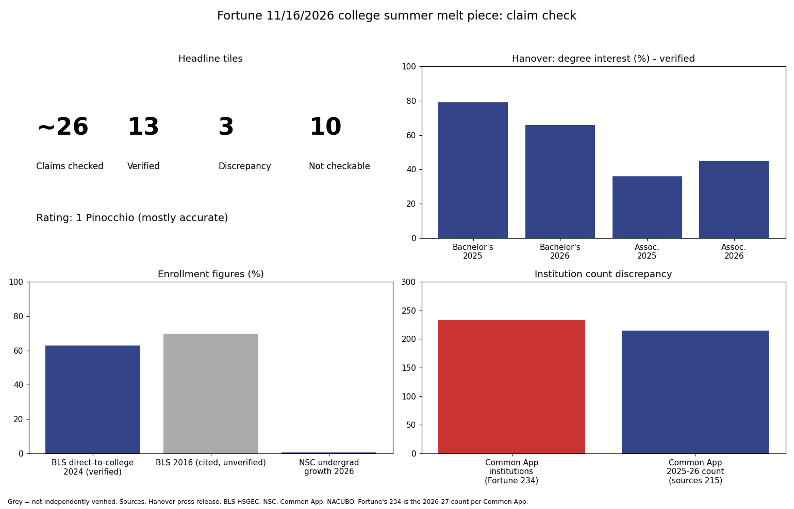

Fact-check: Fortune college summer-melt piece

Mostly accurate: 1 Pinocchio, with one blended statistic and three unconfirmed figures
Most headline survey and federal figures check out. The Common App numbers mix two cycles, and the Georgia State and yield figures could not be matched to a primary source.
- Verified: Hanover (66% vs 79%; 36% to 45%; n=1,000 high schoolers), BLS 62.8% in 2024, NSC +0.6%, NACUBO 57.1% vs 54.5%, Whitman 10% Promise.
- Discrepancy: 234 institutions is the 2026-27 count; 820,000 students were served alongside 215 institutions.
- Unconfirmed: Georgia State 22% to 8%, $125,000, $3.2M; yield 32%/22%, 24%/18%; BLS 2016 70%.
- Not checkable: Whittier 17% (WSJ), Human Capital Education survey data and quotes, DePaul aid figures.
- Misleading context: NACUBO 2024-25 preliminary was 56.3% and finalized 54.5%, so the rise is overstated; vendor-sourced melt results; stated interest is not enrollment, which still grew.
Confidence: medium; access limited to web search snippets and a summarized fetch of the article.
Sources
- highereddive.com/press-release/20261015-hanover-research-survey-reveals-shifting-priorities-among-prospective-colle/
- bls.gov/news.release/hsgec.t01.htm
- studentclearinghouse.org preliminary fall report
- commonapp.org/blog/common-app-expands-direct-admissions-program-2026-27-234-participating-institutions
- highereddive.com NACUBO discount article
- whitman.edu 10% Promise
- nacacnet.org yield trends
- offices.depaul.edu President's notes FY27